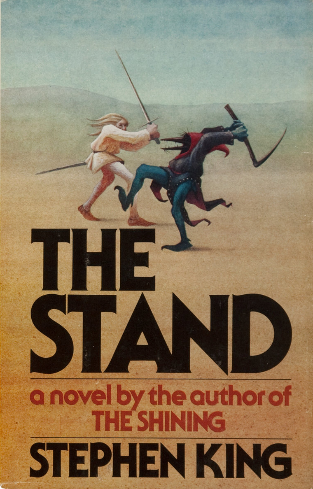
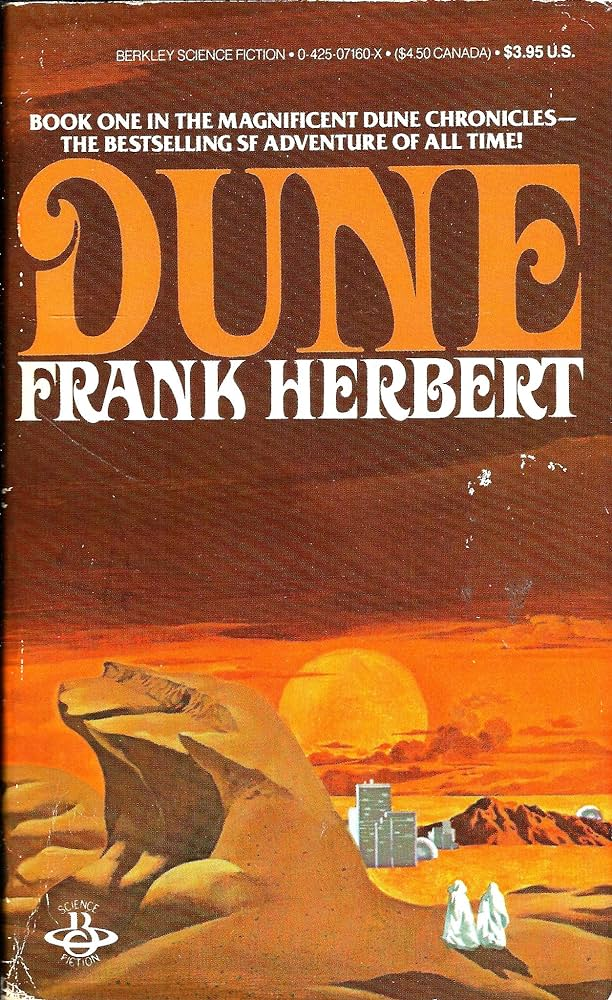
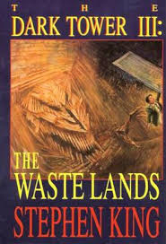
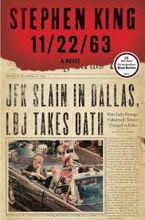

I took a trip to Italy this May. I spent time in Rome, the Tuscan countryside, Florence, and Venice. It was an eventful trip for many reasons - the biggest reason being that I got engaged to my wonderful fiance Olivia.

Tacos are my favorite food. I don't have a favorite way to make them, but that is what makes them so great. There are so many different combinations and ways to prepare them, each time is a new experience.
| Title | Cover | Author | Summary |
|---|---|---|---|
| The Stand |  | Stephen King | A virus wipes out most of the population. Good and evil build their forces in preparation for a final showdown. |
| Dune |  | Frank Herbert | A young man unites a planet and seeks to avenge his family's deaths. |
| The Waste Lands |  | Stephen King | The third entry in Stephen King's "The Dark Tower" series. A group of companions travel towards mystical beams holding the world together |
| 11/22/63 |  | Stephen King | A man goes back in time to prevent the JFK assassination. His task becomes a bigger challenge than anticipated. |